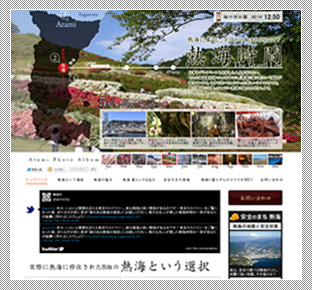
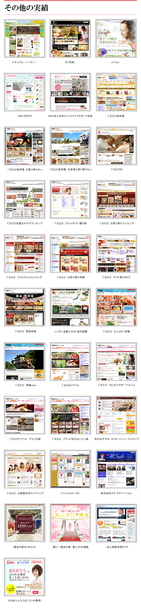

熱海への定住促進を目的とした、熱海で暮らす魅力を紹介するwebサイト
熱海時間

背景
観光名所として名高い熱海ですが、実は「住む」場所としても大変魅力的なことは意外と知られていない事実。 熱海市の人口増加施策として特設ページの制作プロジェクトが、熱海の女社長、倉持淳子さん(クラ・モチベーション代表)のプロデュースのもと、スタートしました。
企画・デザインのポイント
ポイントは実際に暮らす人の生の声を聞き、その生活を感じられること。実際に首都圏から移住し、仕事は都内、住処は熱海の新幹線通勤ライフを送る移住者8組に熱海の良い部分、不便な部分などのロングインタビューを記事風に掲載しました。
また、熱海の地元の人が選んだ、各月の熱海のおすすめポイント、観光ガイドに載っていない熱海の魅力を企画として盛り込みました。
熱海市役所様（クラ・モチベーション様プロデュースにより）
